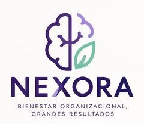

Video de bienvenida
Mensaje o carta de bienvenida del Manual de Bienvenida de NEXORA.

NEXORAConectamos personas, impulsamos el cambio
Bienvenida, inducción y procesos de selección.
Mensaje o carta de bienvenida del Manual de Bienvenida de NEXORA.
Despedida del Manual de Bienvenida de NEXORA.
Videos del manual de inducción al puesto de trabajo.
Vacante: Asistente ejecutivo · Consultoría en psicología organizacional y desarrollo humano.
Buscamos tu talento. Queremos mejorar continuamente la cultura y el clima laboral de instituciones públicas y privadas, promoviendo el desempeño organizacional y el bienestar humano.
Envía tu CV a: somosnexora@gmail.com / 9516093126
Aquí se explicará el proceso de entrevista laboral.
PróximamenteAquí se presentará la batería de pruebas psicométricas.
PróximamenteVideos currículum del equipo de NEXORA.
Presenta la identidad de NEXORA (misión, visión, cultura, filosofía y valores), su estructura organizativa y lineamientos como el reglamento de conducta, el tipo de vestimenta y el glosario.
DisponibleEspacio reservado para el PDF del manual de inducción al puesto de trabajo.
PróximamenteEstablece los principios rectores, lineamientos éticos y directrices que regulan el comportamiento, la toma de decisiones y la ejecución de los servicios de NEXORA.
DisponibleDefine las normas de convivencia y los derechos y obligaciones del empleador y de las personas trabajadoras, además de jornada, permisos, remuneraciones, vacaciones, capacitación, seguridad e higiene, sanciones y periodo de prueba.
Disponible